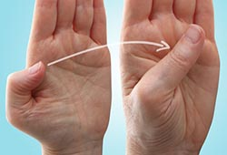

ေလ့က်င့္ ခန္း(၈)

၈။ လက္ ကို သင့္ ေရွ႕မွာထားပါ။ လက္ ဖဝါး ေတြကို မ်က္ ႏွာမူရာဘက္ တြင္ ထားပါ။
လက္ မကို က်န္ လက္ ေခ်ာင္း မ်ားႏွင့္ ေဝးႏိုင္ သမွ် ေဝး ေအာင္ ေရႊ႕ ပါ။
ျပီးမွ လက္ သန္း ရဲ႕ ေအာက္ ေျခနား ေရာက္ တဲ့အထိ ေကြးပါ။
လက္ သန္းရဲ႕ ေအာက္ ေျခကို မထိရင္ အနီးဆံုး ေနရာ ေရာက္ တဲ့အထိ ေကြးပါ။
မိနစ္ ဝက္ သို႕ တစ္ မိနစ္ ေလာက္ ၾကာ ေသာ္ လက္ ဝါးျဖန္႔ ပါ။
လက္ မ ႏွစ္ ခုလံုးကို အနည္း ဆံုး ၄ၾကိမ္ ျပဳလုပ္ ပါ။